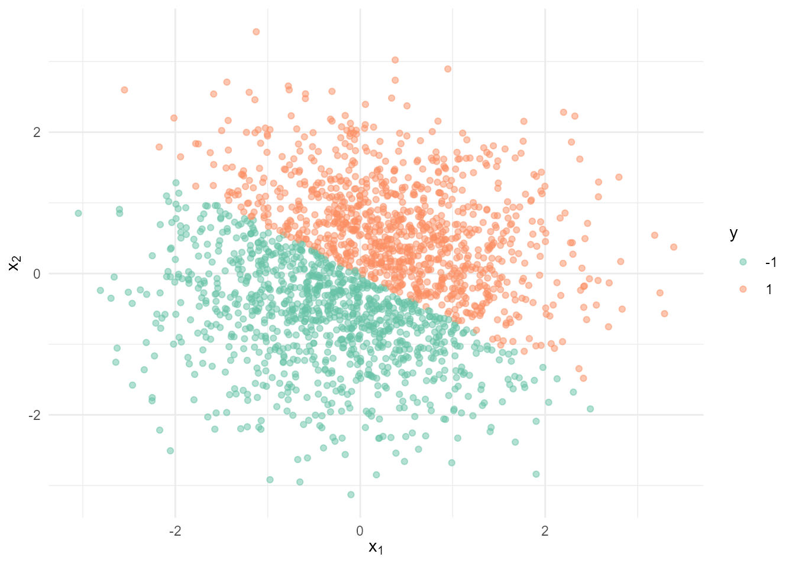
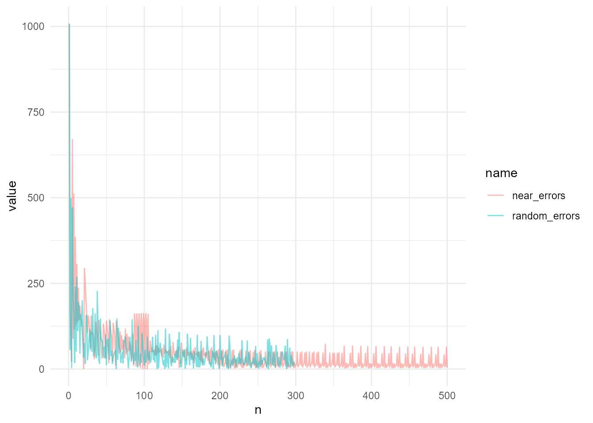
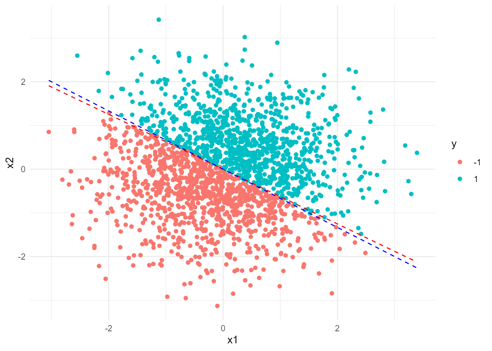
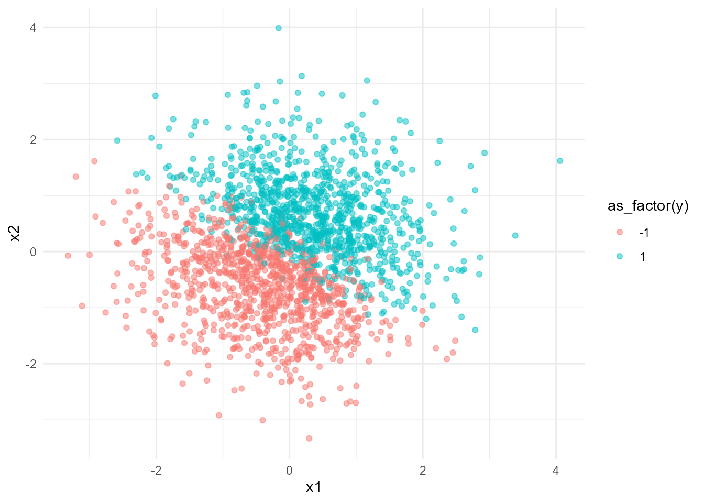
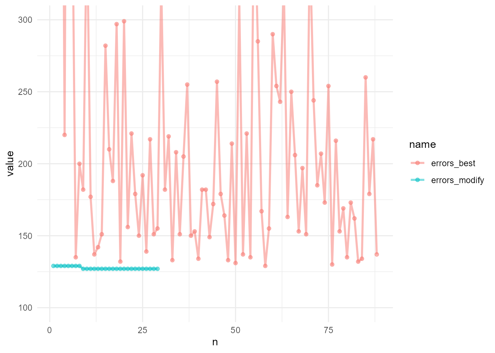
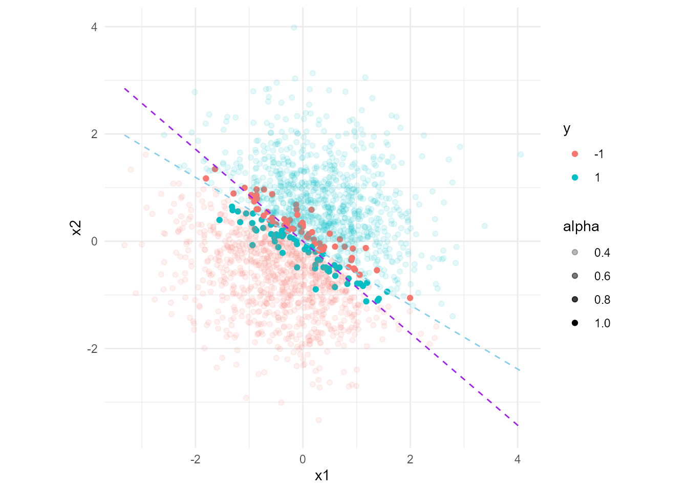
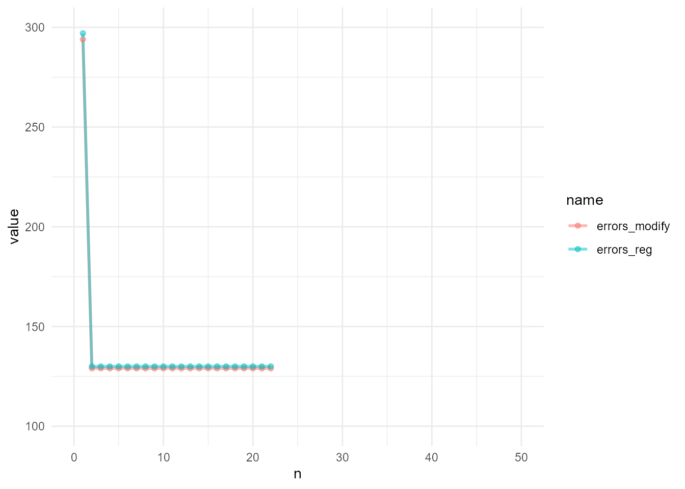
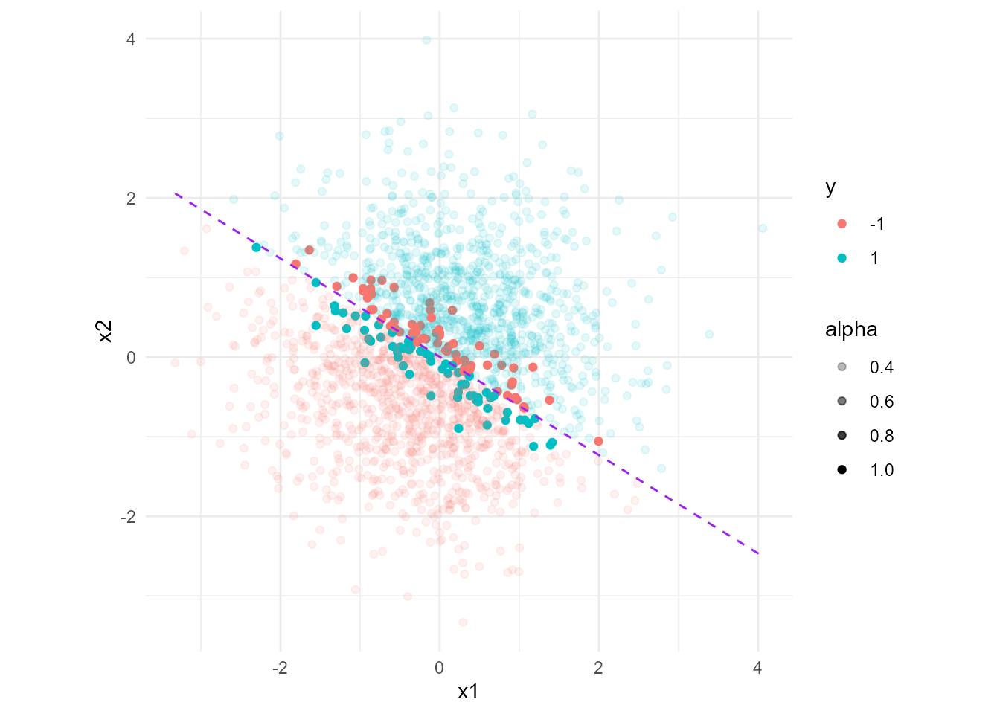

library(tidyverse)
library(plotly)
theme_set(theme_minimal())
knitr::opts_chunk$set(
out.width = "80%",
fig.align = "center",
dev = "ragg_png"
)构造感知机模型
1 PLA
set.seed(123)
n = 2000
df <- tibble(
id = 1:n,
x1 = rnorm(n),
x2 = rnorm(n),
y = if_else(2*x1 + 3*x2 >= 0, 1, -1)
) %>%
arrange(id)
df# A tibble: 2,000 × 4
id x1 x2 y
<int> <dbl> <dbl> <dbl>
1 1 -0.560 -0.512 -1
2 2 -0.230 0.237 1
3 3 1.56 -0.542 1
4 4 0.0705 1.22 1
5 5 0.129 0.174 1
6 6 1.72 -0.615 1
7 7 0.461 -1.81 -1
8 8 -1.27 -0.644 -1
9 9 -0.687 2.05 1
10 10 -0.446 -0.561 -1
# ℹ 1,990 more rowsdf %>%
ggplot(aes(x1, x2, color = as_factor(y))) +
geom_point(alpha = 0.5) +
labs(
x = latex2exp::TeX("$x_1$"),
y = latex2exp::TeX("$x_2$"),
color = "y"
) +
scale_color_brewer(palette = "Set2")
pla_near <- function(df, total_times){
errors = 0
n = 0
w = c(0, 0)
ddd = df %>%
mutate(score = pmap_dbl(list(x1, x2), .f = \(x, y) if_else(w %*% c(x, y) >= 0, 1, -1))) %>%
filter(score != y)
while(nrow(ddd) > 0 & n < total_times) {
# i = sample(1:nrow(ddd), size = 1)
# x = c(ddd$x1[[i]], ddd$x2[[i]])
# y = ddd$y[[i]]
x = c(ddd$x1[[1]], ddd$x2[[1]])
y = ddd$y[[1]]
w = w + y*x
n = n + 1
errors[[n]] = nrow(ddd)
ddd = df %>%
mutate(score = pmap_dbl(list(x1, x2), .f = \(x, y) if_else(w %*% c(x, y) >= 0, 1, -1))) %>%
filter(y != score)
}
return(list(w = w, n = n, errors = errors))
}
pla_random <- function(df, total_times){
errors = rep(NA, total_times)
n = 0
w = c(0, 0)
ddd = df %>%
mutate(score = pmap_dbl(list(x1, x2), .f = \(x, y) if_else(w %*% c(x, y) >= 0, 1, -1))) %>%
filter(score != y)
while(nrow(ddd) > 0 & n < total_times) {
i = sample(1:nrow(ddd), size = 1)
x = c(ddd$x1[[i]], ddd$x2[[i]])
y = ddd$y[[i]]
w = w + y*x
n = n + 1
errors[[n]] = nrow(ddd)
ddd = df %>%
mutate(score = pmap_dbl(list(x1, x2), .f = \(x, y) if_else(w %*% c(x, y) >= 0, 1, -1))) %>%
filter(y != score)
}
return(list(w = w, n = n, errors = errors))
}T_times <- 500
rrr_near <- pla_near(df, T_times)
rrr_random <- pla_random(df, T_times)
df_result <- tibble(
n = 1:T_times,
near_errors = rrr_near$errors,
random_errors = rrr_random$errors
)df_result %>%
pivot_longer(
cols = -n
) %>%
ggplot(aes(n, value, color = name)) +
geom_path(alpha = 0.5)Warning: Removed 202 rows containing missing values or values outside the scale range
(`geom_path()`).
df %>%
mutate(score_near = pmap_dbl(list(x1, x2), .f = \(x, y) if_else(rrr_near$w %*% c(x, y) >= 0, 1, -1)),
score_random = pmap_dbl(list(x1, x2), .f = \(x, y) if_else(rrr_random$w %*% c(x, y) >= 0, 1, -1))) %>%
filter(score_random != y | score_near != y)# A tibble: 15 × 6
id x1 x2 y score_near score_random
<int> <dbl> <dbl> <dbl> <dbl> <dbl>
1 325 -0.523 0.336 -1 1 -1
2 334 1.52 -1.01 1 -1 1
3 394 -0.829 0.546 -1 1 -1
4 711 1.06 -0.667 1 -1 1
5 741 0.712 -0.468 1 -1 1
6 847 -0.644 0.421 -1 1 -1
7 854 -1.16 0.754 -1 1 -1
8 1094 1.02 -0.640 1 -1 1
9 1111 -0.625 0.411 -1 1 -1
10 1151 -0.0570 0.0372 -1 1 -1
11 1268 1.43 -0.929 1 -1 1
12 1304 0.354 -0.228 1 -1 1
13 1448 -1.99 1.28 -1 1 -1
14 1449 0.551 -0.358 1 -1 1
15 1804 1.26 -0.801 1 -1 1f_1 = function(x){
x * rrr_near$w[[1]] / (-rrr_near$w[[2]])
}
f_2 = function(x){
x * rrr_random$w[[1]] / (-rrr_random$w[[2]])
}
df %>%
ggplot(aes(x1, x2)) +
geom_point(aes(color = as_factor(y))) +
geom_function(fun = f_1, lty = 2, color = "red") +
geom_function(fun = f_2, lty = 2, color = "blue") +
labs(color = "y")
2 modify PLA
set.seed(111)
n = 2000
df <- tibble(
id = 1:n,
x1 = rnorm(n),
x2 = rnorm(n),
e = rnorm(n),
y = if_else(2*x1 + 3*x2 + e >= 0, 1, -1)
) %>%
arrange(id)
df# A tibble: 2,000 × 5
id x1 x2 e y
<int> <dbl> <dbl> <dbl> <dbl>
1 1 0.235 1.13 0.141 1
2 2 -0.331 0.858 -0.600 1
3 3 -0.312 -0.574 -1.06 -1
4 4 -2.30 1.38 1.89 1
5 5 -0.171 -0.575 -0.657 -1
6 6 0.140 -0.593 -1.15 -1
7 7 -1.50 -1.42 -1.10 -1
8 8 -1.01 0.0288 -1.44 -1
9 9 -0.948 -0.361 0.823 -1
10 10 -0.494 0.508 0.147 1
# ℹ 1,990 more rowsdf %>%
ggplot(aes(x1, x2, color = as_factor(y))) +
geom_point(alpha = 0.5)
pla_best <- function(df, total_times){
n = 0
w = c(0,0)
ws = list()
errors = nrow(df)
while (last(errors) > 0 & n < total_times) {
n = n + 1
ddd = df %>%
mutate(score = pmap_dbl(list(x1, x2),
\(x, y) if_else((w %*% c(x, y)) >= 0, 1, -1))) %>%
filter(score != y)
i = sample(1:nrow(ddd), size = 1)
errors[[n]] = nrow(ddd)
x = c(ddd$x1[[i]], ddd$x2[[i]])
y = ddd$y[[i]]
w = w + y*x
ws[[n]] = w
}
return(list(ws = ws, n = n, errors = errors))
}
pla_modify <- function(df, total_times, w = c(0, 0)){
n = 0
#ws = list()
errors = nrow(df)
while (last(errors) > 0 & n < total_times) {
n = n + 1
# ddd = df %>%
# mutate(score = pmap_dbl(list(x1, x2),
# \(x, y) if_else((w %*% c(x, y)) >= 0, 1, -1))) %>%
# filter(score != y)
w_list = pmap(df,
\(x1, x2, y, ...) w + y * c(x1, x2)) %>%
sample(size = min(floor(0.1 * nrow(df)), 100))
n_errors = map_dbl(w_list, \(x) sum(pmap_dbl(df, \(x1, x2, ...) sign(c(x1, x2) %*% x)) != df$y))
min_errors = min(n_errors)
w_list_min_e = w_list[[which.min(n_errors)]]
if (min_errors <= last(errors)) {
w = w_list_min_e
errors[[n]] = min_errors
}else{
w = w
errors[[n]] = last(errors)
}
if (n>20) {
if (errors[[n-20]] == errors[[n]]){
break
}
}
}
return(list(w = w, n = n, errors = errors))
}total_times <- 88
rrr_best <- pla_best(df, total_times)
rrr_modify <- pla_modify(df, total_times)df_result <- tibble(
n = 1:total_times,
errors_modify = c(rrr_modify$errors, rep(NA, total_times - length(rrr_modify$errors))),
errors_best = rrr_best$errors
)
df_result %>%
pivot_longer(-n) %>%
ggplot(aes(n, value, color = name)) +
geom_line(linewidth = 1, alpha = 0.5) +
geom_point(alpha = 0.5) +
coord_cartesian(ylim = c(100, 300))Warning: Removed 59 rows containing missing values or values outside the scale range
(`geom_line()`).Warning: Removed 59 rows containing missing values or values outside the scale range
(`geom_point()`).
w <- rrr_best$ws[[which.min(rrr_best$errors)]]
f_3 <- function(x){
x * w[[1]] / (-w[[2]])
}
f_4 <- function(x){
x * rrr_modify$w[[1]] / (-rrr_modify$w[[2]])
}
df %>%
mutate(score = pmap_dbl(df, \(x1, x2, ...) sign(c(x1, x2) %*% rrr_modify$w)),
alpha = if_else(score == y, 0.25, 1)) %>%
ggplot(aes(x1, x2)) +
geom_point(aes(color = as_factor(y), alpha = alpha)) +
geom_function(fun = f_3, lty = 2, color = "purple") +
geom_function(fun = f_4, lty = 2, color = "skyblue") +
labs(color = "y") +
coord_equal()
w0 <- c(2, 3)
w0_erors <- df %>%
mutate(score = pmap_dbl(list(x1, x2),
\(x, y) if_else((w0 %*% c(x, y)) >= 0, 1, -1))) %>%
filter(score != y) %>%
nrow()
pla_best_errors <- min(rrr_best$errors)
pla_modify_errors <- last(rrr_modify$errors)
tibble(
w0_erors,
pla_best_errors,
pla_modify_errors
)# A tibble: 1 × 3
w0_erors pla_best_errors pla_modify_errors
<int> <int> <dbl>
1 134 129 1273 linear regression and modify PLA
pla_modify <- function(df, total_times, w = c(0, 0, 0)){
n = 0
#ws = list()
errors = nrow(df)
while (last(errors) > 0 & n < total_times) {
n = n + 1
# ddd = df %>%
# mutate(score = pmap_dbl(list(x1, x2),
# \(x, y) if_else((w %*% c(x, y)) >= 0, 1, -1))) %>%
# filter(score != y)
w_list = pmap(df,
\(x1, x2, y, ...) w + y * c(1, x1, x2)) %>%
sample(size = min(floor(0.1 * nrow(df)), 100))
n_errors = map_dbl(w_list, \(x) sum(pmap_dbl(df, \(x1, x2, ...) sign(c(1, x1, x2) %*% x)) != df$y))
min_errors = min(n_errors)
w_list_min_e = w_list[[which.min(n_errors)]]
if (min_errors <= last(errors)) {
w = w_list_min_e
errors[[n]] = min_errors
}else{
w = w
errors[[n]] = last(errors)
}
if (n>20) {
if (errors[[n-20]] == errors[[n]]){
break
}
}
}
return(list(w = w, n = n, errors = errors))
}
reg_pla <- function(df, formula, total_times){
fit <- lm(formula, data = df)
pla_modify(df, total_times, w = fit$coefficients)
}total_times <- 88
formula <- formula(y ~ x1 + x2)
microbenchmark::microbenchmark(
rrr_modify_2 <- pla_modify(df, total_times),
rrr_reg_pla <- reg_pla(df, formula, total_times),
times = 1
)Unit: seconds
expr min lq mean
rrr_modify_2 <- pla_modify(df, total_times) 15.22693 15.22693 15.22693
rrr_reg_pla <- reg_pla(df, formula, total_times) 14.08558 14.08558 14.08558
median uq max neval
15.22693 15.22693 15.22693 1
14.08558 14.08558 14.08558 1df_result <- tibble(
n = 1:total_times,
errors_modify = c(rrr_modify_2$errors, rep(NA, total_times - length(rrr_modify_2$errors))),
errors_reg = c(rrr_reg_pla$errors, rep(NA, total_times - length(rrr_reg_pla$errors)))
)
df_result %>%
pivot_longer(-n) %>%
ggplot(aes(n, value, color = name)) +
geom_line(linewidth = 1, alpha = 0.5) +
geom_point(alpha = 0.5) +
coord_cartesian(ylim = c(100, 300), xlim = c(0, 50))
f_modify <- function(x){
rrr_modify_2$w[[1]] + x * rrr_modify$w[[2]] / (-rrr_modify$w[[3]])
}
f_reg <- function(x){
rrr_reg_pla$w[[1]] + x * rrr_reg_pla$w[[2]] / (-rrr_reg_pla$w[[3]])
}
df %>%
mutate(score = pmap_dbl(df, \(x1, x2, ...) sign(c(1, x1, x2) %*% rrr_reg_pla$w)),
alpha = if_else(score == y, 0.25, 1)) %>%
ggplot(aes(x1, x2)) +
geom_point(aes(color = as_factor(y), alpha = alpha)) +
geom_function(fun = f_reg, lty = 2, color = "purple") +
geom_function(fun = f_modify, lty = 2, color = "skyblue") +
labs(color = "y") +
coord_equal()Warning: Computation failed in `stat_function()`.
Caused by error in `rrr_modify$w[[3]]`:
! subscript out of bounds
tibble(
err_modify = last(rrr_modify_2$errors),
err_reg_pla = last(rrr_reg_pla$errors)
)# A tibble: 1 × 2
err_modify err_reg_pla
<dbl> <dbl>
1 129 130